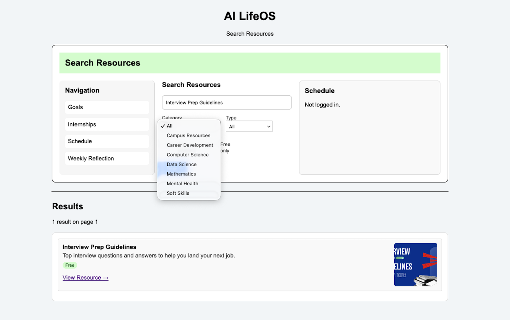
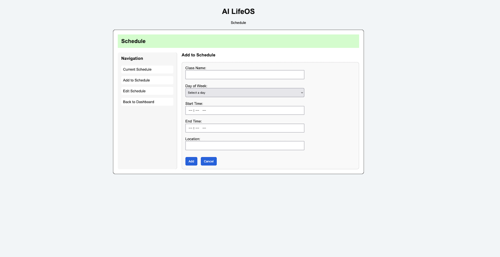
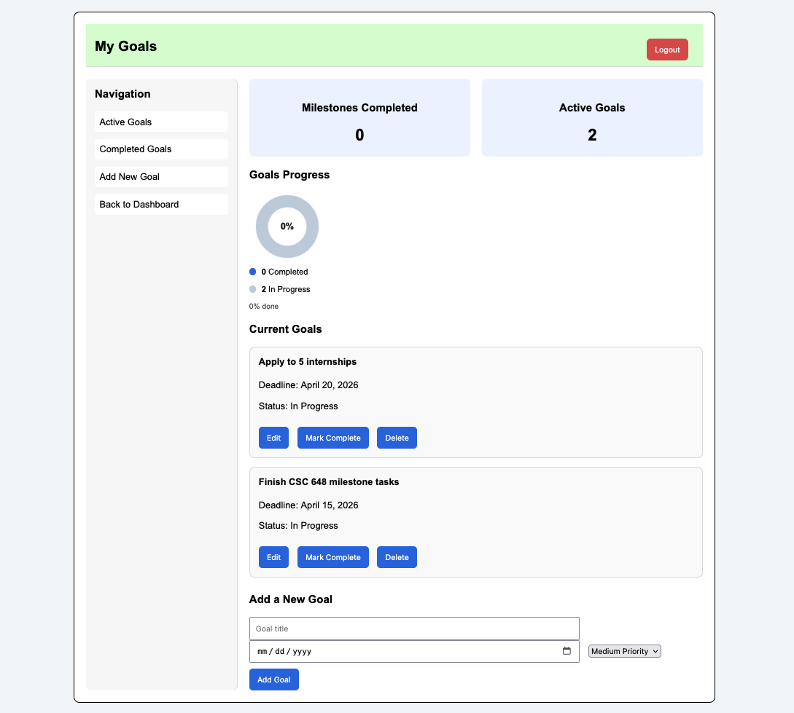
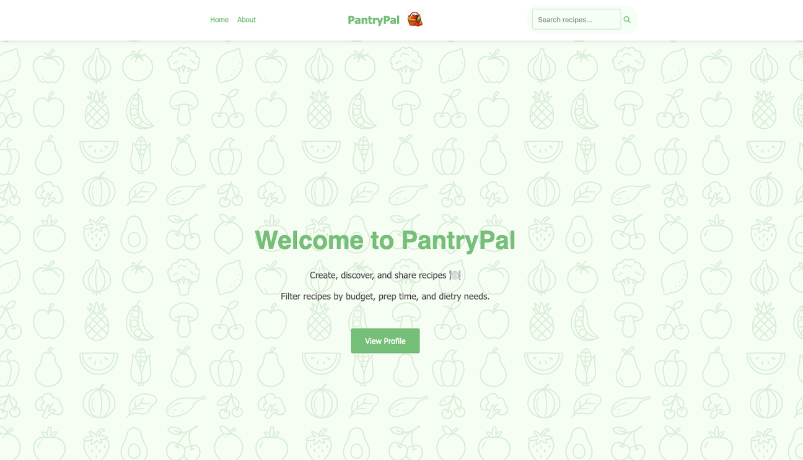
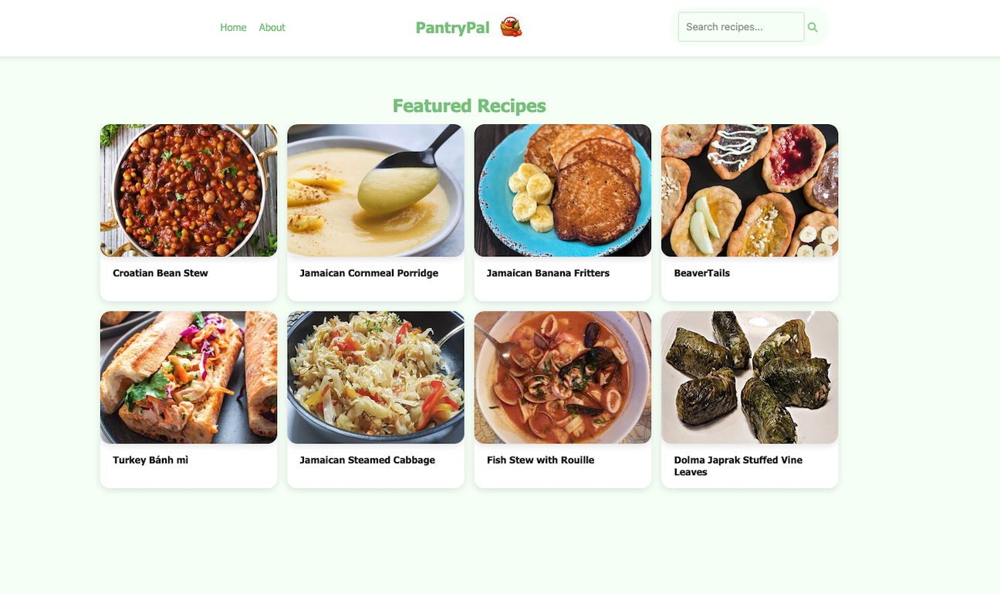
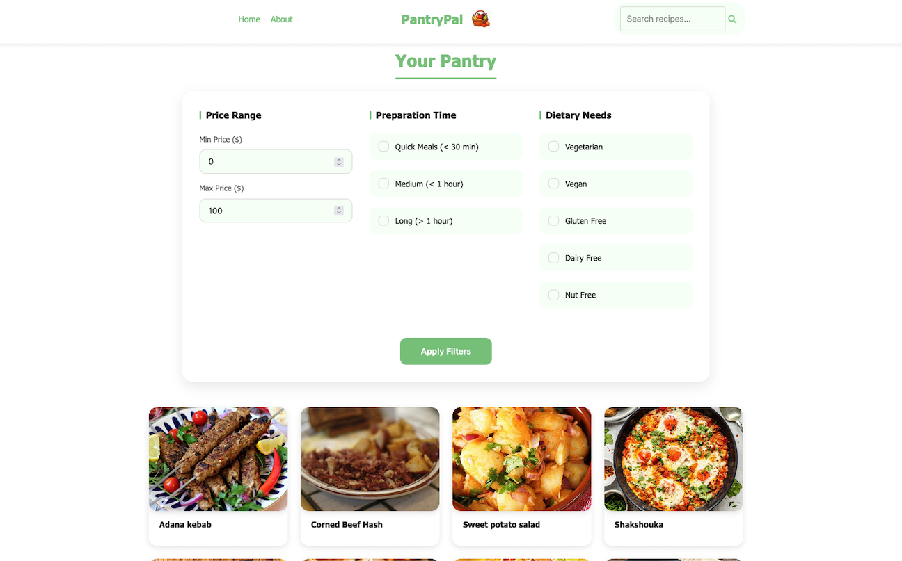

AI Life Student Planner
Role: Frontend Lead
AI Life Student Planner is a student-focused planning website designed to help users organise academic goals, keep on track of their schedule, manage internships, and reflect on their week. This project gave me experience working on a larger web application with multiple pages, user-focused design, and features built around real student needs.
As the frontend lead, I helped create the shared structure for the project by building the original HTML and CSS outlines for the frontend pages. I completed the frontend for the schedule page and weekly reflection page, contributed to the dashboard, and helped standardise the styling across pages so the site felt consistent and easy to use.
I also reviewed and adjusted other team members' pages by fixing bugs I found, improving page structure, and helping keep the frontend consistent across the project. Alongside the technical work, I helped organise frontend tasks, answer team members' questions, completed a GitHub peer review, and resolved merge conflicts.
Technologies & Concepts
HTML, CSS, JavaScript, responsive design, UI design, frontend leadership, GitHub collaboration, merge conflict resolution, teamwork, and web application planning.



PantryPal
Role: Frontend Design & Layout
PantryPal is a full-stack recipe web application created as a group project. The app allows users to browse recipes, search and filter results, create an account, and manage their own recipe posts. The project focused on building a useful, responsive application with both front-end and back-end functionality.
My role focused on frontend design and layout. I designed responsive HTML and CSS layouts for the application pages, created a consistent design system with typography and colours, built recipe cards and detailed view templates, and designed the visual system for dietary restriction tags.
I also worked on making the interface mobile-friendly, organised, and easy to navigate so users could browse, filter, and view recipes clearly across different screen sizes.
Technologies & Concepts
HTML, CSS, JavaScript, Node.js, Express, EJS templates, MongoDB, responsive design, authentication, CRUD functionality, and teamwork.



Linux Device Driver: Caesar Cipher
Operating Systems Coursework
Built a Linux device driver in C that implements a Caesar cipher. The user program sends a message to the driver, sets a shift key, chooses encrypt or decrypt mode using ioctl, writes data to the device, and reads the processed result back.
The driver supports open, release, read, write, and ioctl operations, and uses kernel log messages to track when the module is loaded, used, and unloaded.
Technologies & Concepts
C, Linux, kernel modules, device drivers, ioctl, read/write operations, misc devices, user-kernel communication, Makefiles, and debugging.
Instagram340
Object-Oriented Programming Coursework
Built an Instagram-inspired C++ application as an individual coursework project. The project used object-oriented programming concepts to model users, posts, reels, and stories, with separate classes and files for each major component.
This project helped strengthen my understanding of C++ class design, inheritance, file organisation, and building a program with multiple interacting objects.
Technologies & Concepts
C++, object-oriented programming, classes, inheritance, polymorphism, file organisation, user interaction, and software design.